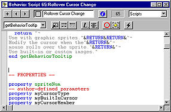
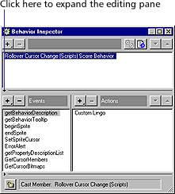

Using Director > Behaviors > Creating and modifying behaviors
Using Director > Behaviors > Creating and modifying behaviors |
Creating and modifying behaviors
Without any scripting or programming experience, you can use the Behavior Inspector to create and modify behaviors to perform basic actions. To create behaviors with more complex structures, you need to understand Lingo.
Using the Behavior Inspector is a good way to learn Lingo. You can examine the scripts created by the Behavior Inspector to see how basic functions are assembled. Select any behavior and click the Script button to view the associated Lingo script.

All behaviors detect an event and then perform one or more actions in response. The Behavior Inspector lists the most common events and actions used in behaviors.
For experienced Lingo programmers, the Behavior Inspector also provides a shortcut for writing simple scripts.
Note: To always edit behaviors in the Script window instead of the Behavior Inspector, choose File > Preferences > Editors. In the Editors Preferences dialog box, choose Behaviors from the list and then click Editor. In the Select Editor box, choose Script Window.
To create or modify a behavior:
1 |
Do one of the following: |
To create a new behavior, click the Behaviors pop-up menu, choose New Behavior, and enter a name for the new behavior.
|
|
The behavior appears in the currently selected Cast window, in the first empty position. Select an empty cast position first if you want the behavior to appear in a different place. |
|
To modify a behavior, select it in the Behavior Inspector. |
|
2 |
Click the arrow in the lower left of the Behavior Inspector to expand the editing pane.
 |
The editing pane shows the events and actions in the current behavior. If you're creating a new behavior, no events or actions appear. |
|
To add a new event or action group to the behavior, choose an event from the Events pop-up menu and then choose actions for the event from the Actions pop-up menu. |
|
You can choose as many actions as you need for a single event. |
|
To change an existing event or action group, choose an event from the list and then add or remove actions in the Actions list. |
|
To delete an event or action group, choose the event and press Delete. |
|
To change the sequence of actions in an event or action group, choose an event from the Events list, choose an action from the Actions list, and then click the up and down arrows above the Actions list to change the order of actions. |
|
To lock the current selection so nothing changes in the Behavior Inspector when new sprites are selected, click the Lock Selection button in the lower left of the expanded Behavior Inspector. |
|
If you are familiar with Lingo, you can also edit a behavior's script directly.